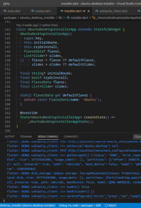

オープンソースを活かした開発
{{ DISTRO }}は、アプリケーション開発やWeb開発、データサイエンスやAI/ML、さらにDevOpsからシステム開発まで、幅広く対応する理想的なワークステーションです。すべての{{ DISTRO }}リリースには最新のツールチェインが含まれており、主要なIDEにも対応しています。
Visual Studio Code
IDEA Ultimate
Pycharm
GitKraken
|
 |
オープンソースを活かした開発 {{ DISTRO }}は、アプリケーション開発やWeb開発、データサイエンスやAI/ML、さらにDevOpsからシステム開発まで、幅広く対応する理想的なワークステーションです。すべての{{ DISTRO }}リリースには最新のツールチェインが含まれており、主要なIDEにも対応しています。 Visual Studio Code IDEA Ultimate Pycharm GitKraken |